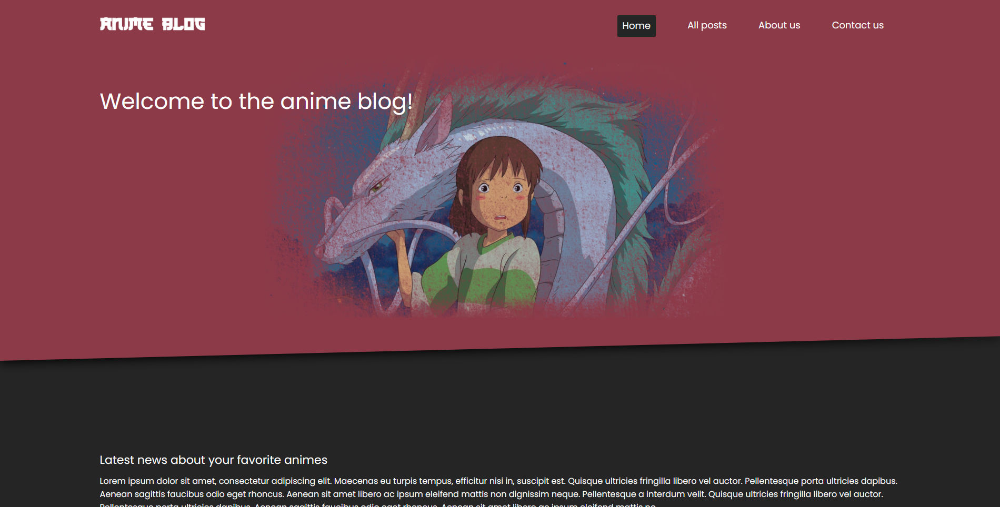

Anime blog | Project exam
About the assignment
We got tasked with creating a blog site. We got to choose theme and content, so I chose anime themed.
The website should contain a home page, about page, list of blog posts, specific blog page and a contact page.
Things I could do better is optimizing the website for apple safari and iphones, some images get stretched for some reason. I would also make the picture modal on the blog specific page better.
Link to website..
